Portfolio · 32 photographies
Ça se voit.
Ça se ressent.
Je veux raconter ta sueur.
Ta beauté. Ta rage. Ta scène.
Le reste, je te laisse le regarder.
01 / 14 photographies
Tout donner.
Les corps qui lâchent. Les cheveux qui volent. Ces moments où la scène prend toute la place.

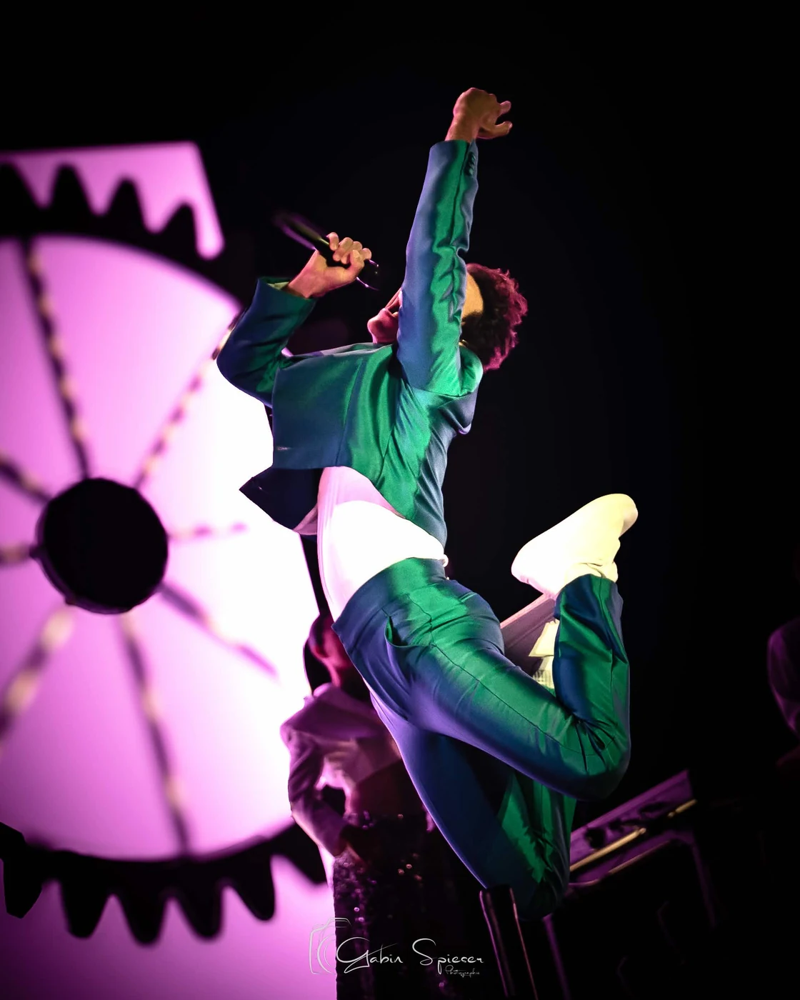


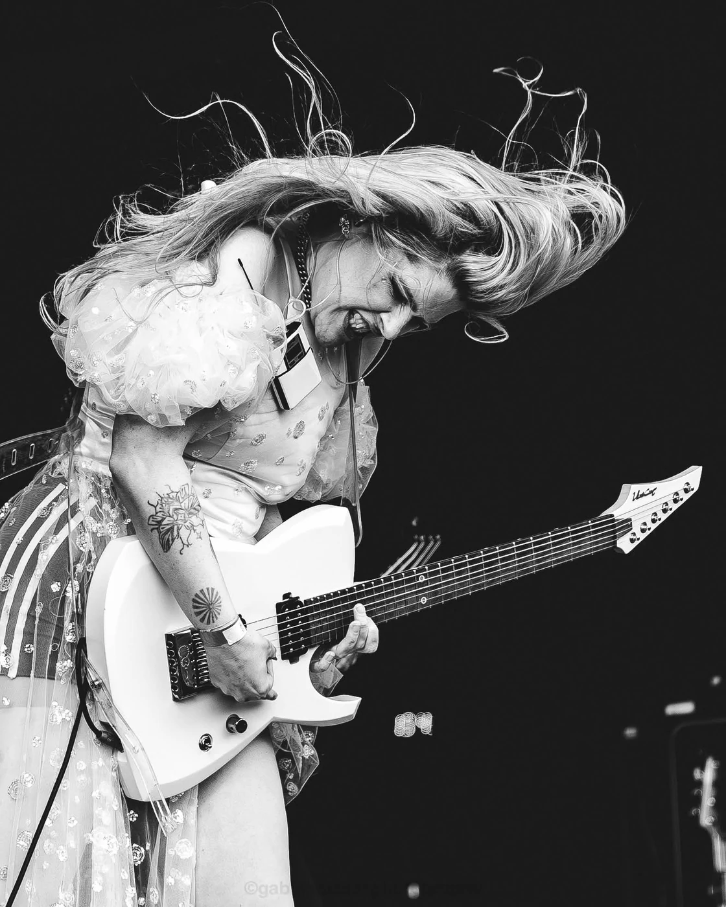


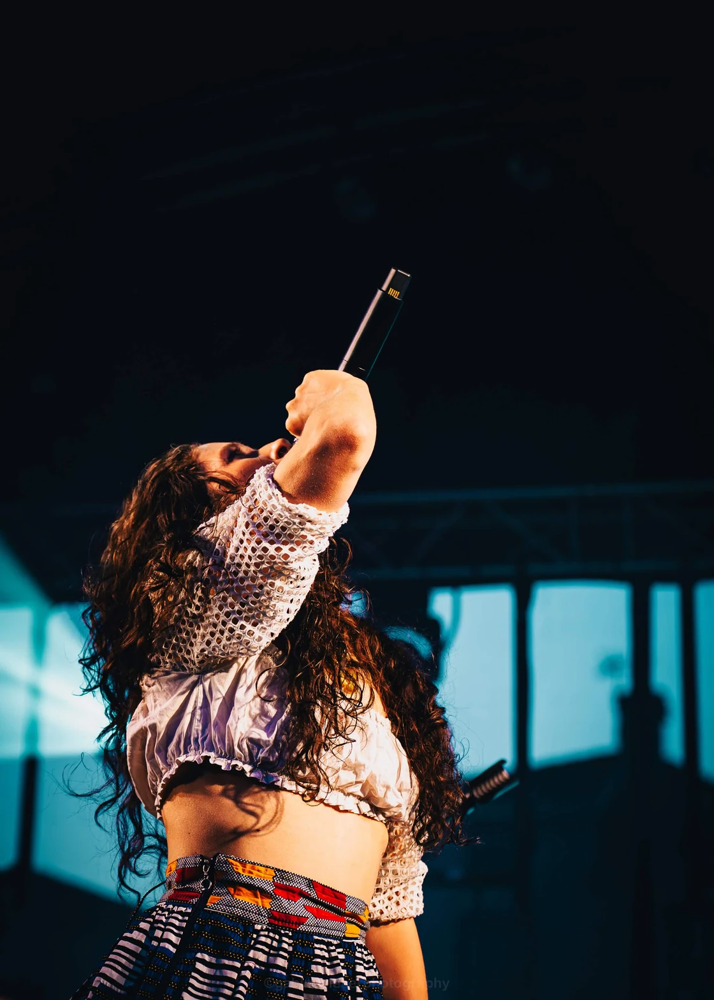


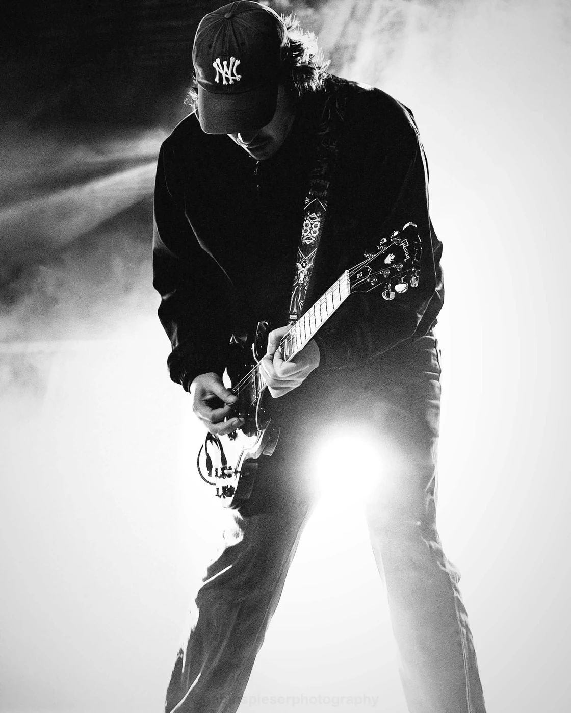


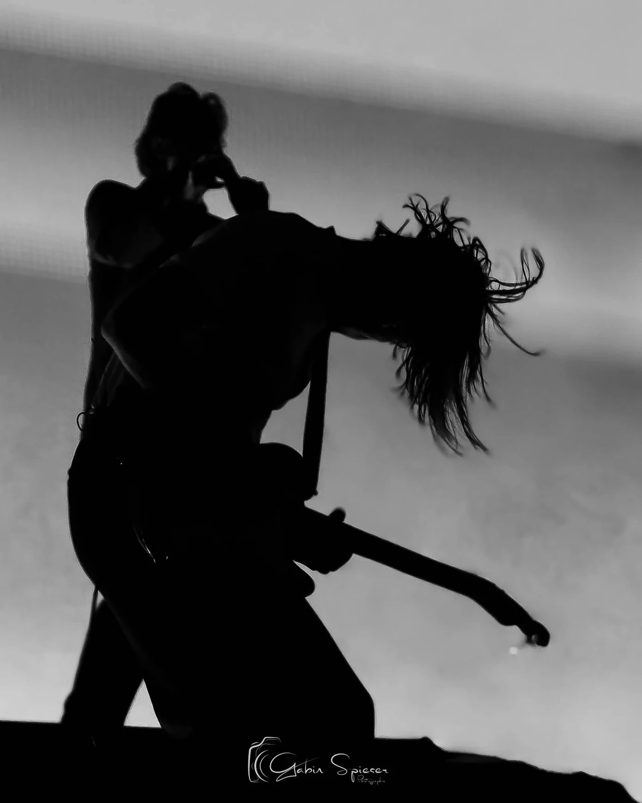
02 / 10 photographies
Être vrai.
Un regard. Un geste. Une seconde où tu oublies l’objectif. C’est là que je veux être.

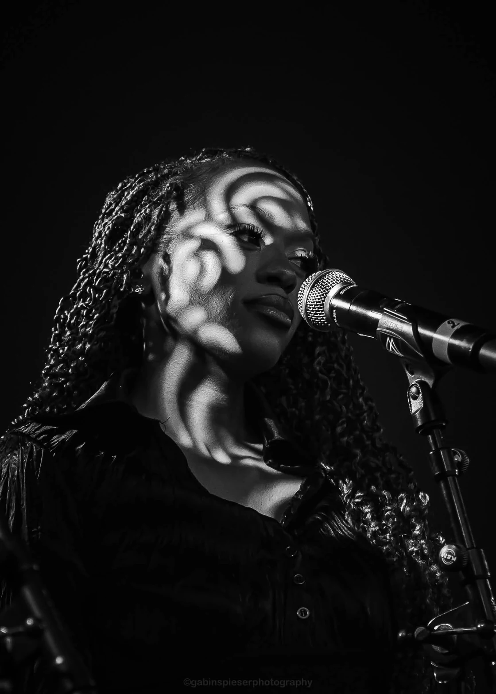


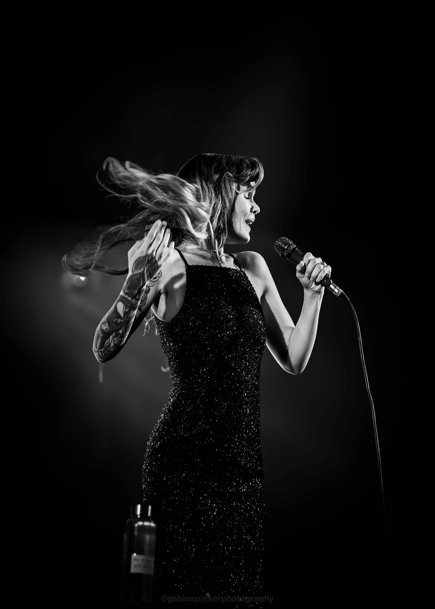


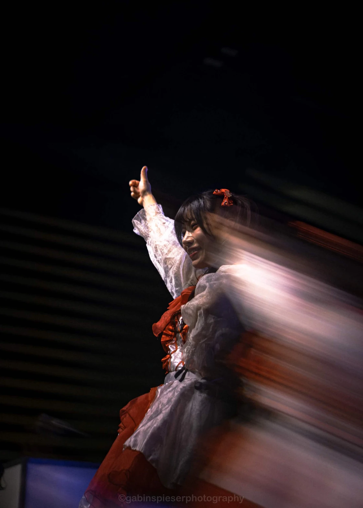


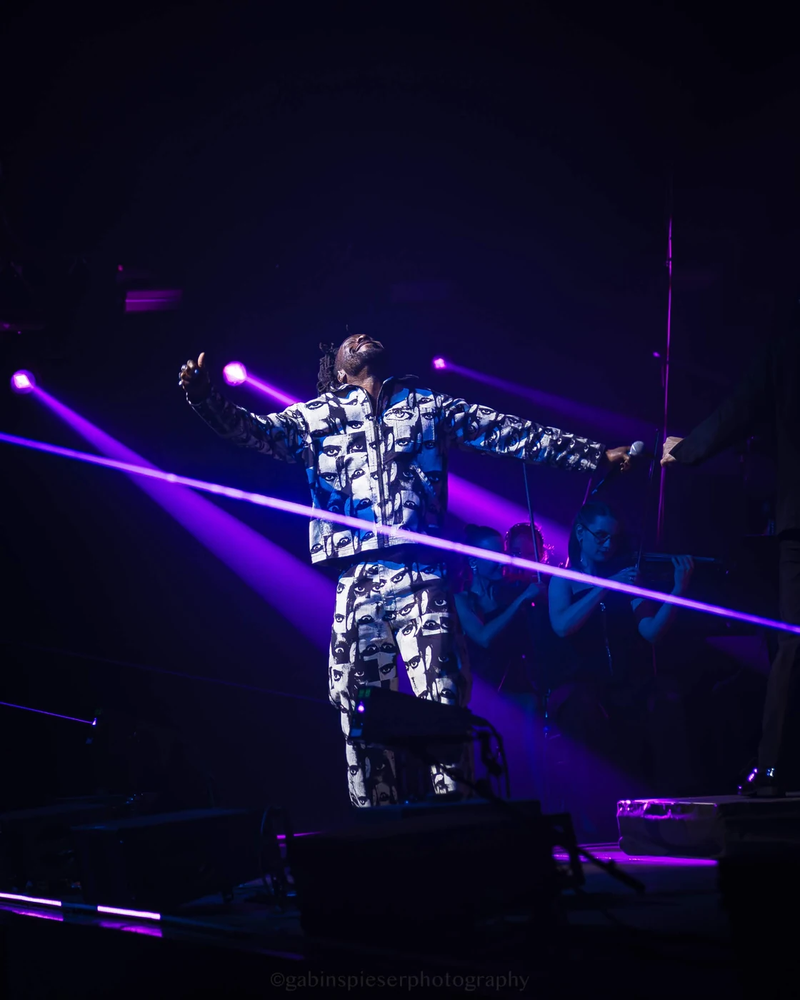

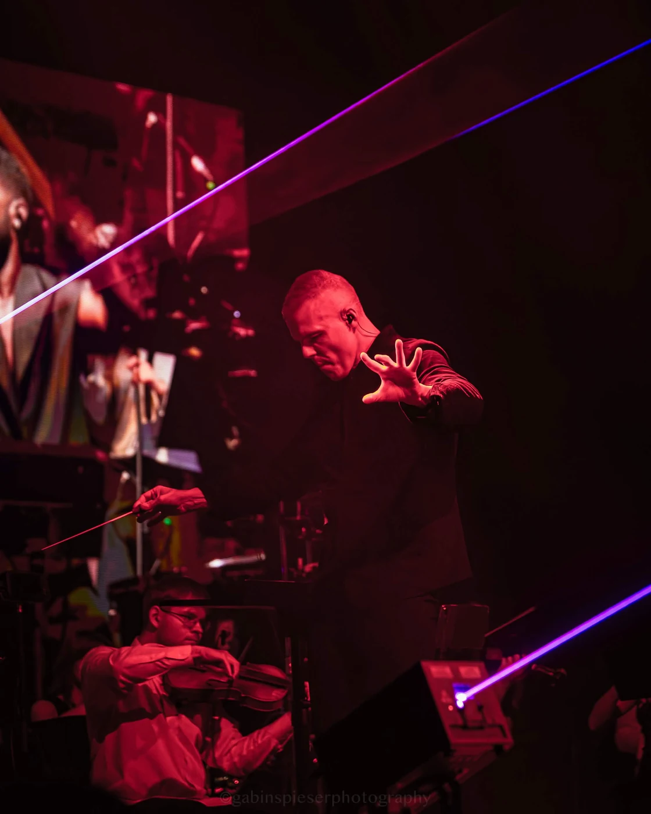

03 / 08 photographies
Faire vibrer
la salle.
La lumière, la foule, cette énergie qui circule entre la scène et le public. Je veux qu’on la ressente encore.


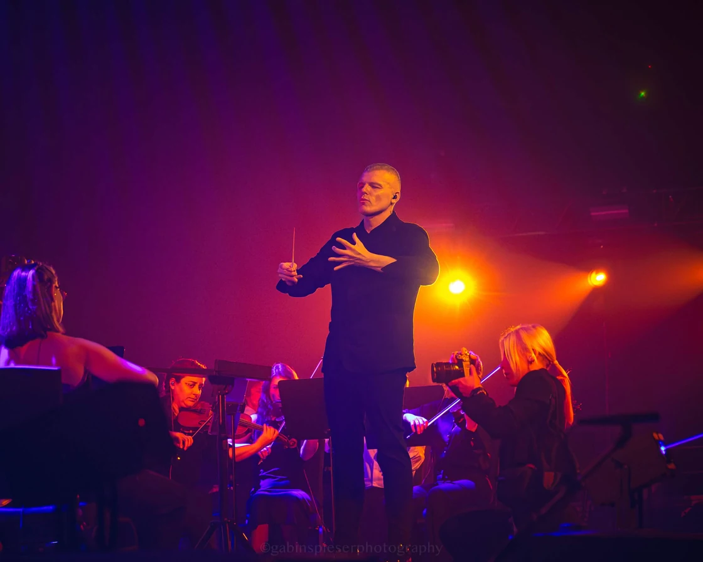

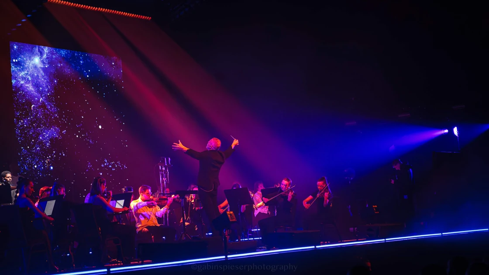


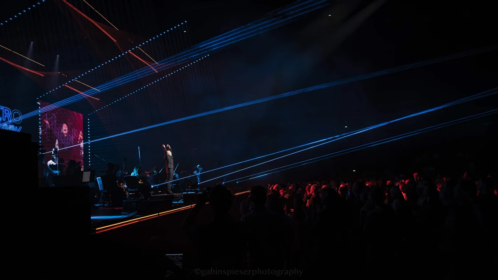


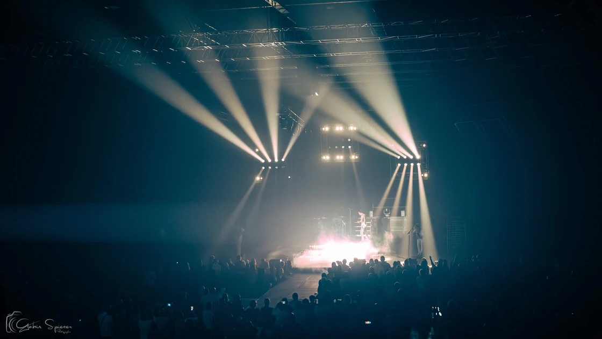

Et maintenant ?
La prochaine scène,
c’est la tienne ?
Un concert, un portrait, un projet à raconter de A à Z.
On commence par en parler.